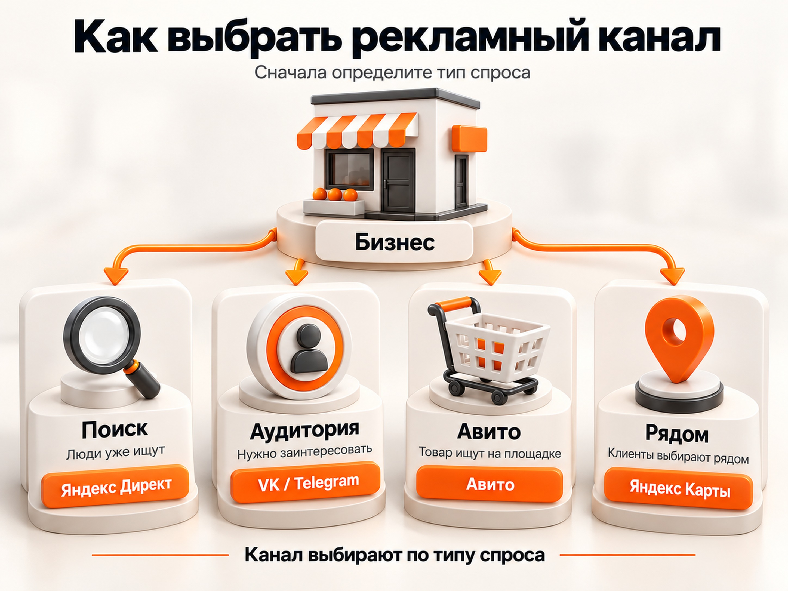
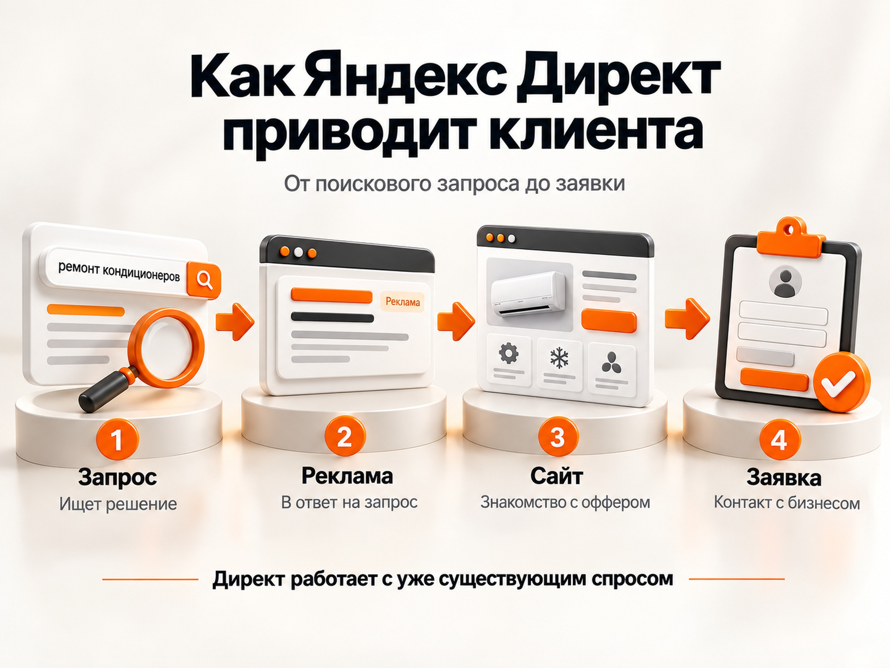
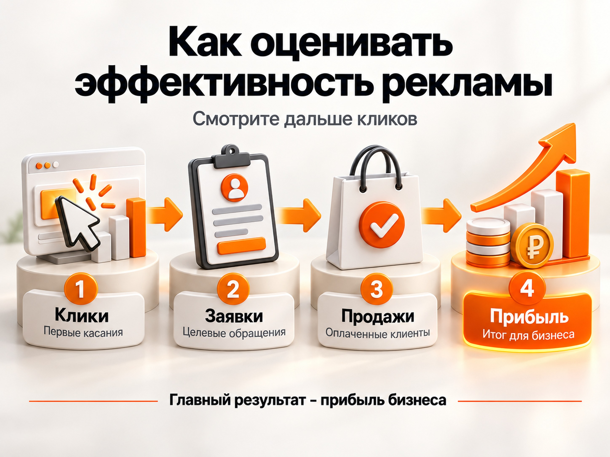
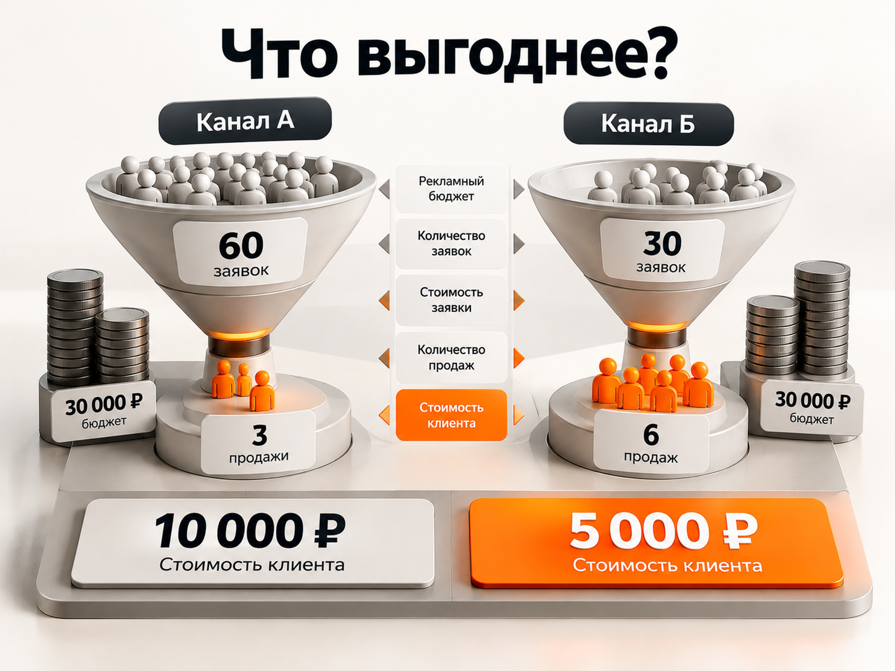

Блог о платном трафике
Какая реклама самая эффективная для бизнеса
Если бизнес только открылся и нужно получить первых клиентов, я бы в большинстве случаев сначала проверял Яндекс Директ. Особенно если люди уже ищут ваш товар или услугу в интернете.
На поиске реклама показывается человеку, который сам вводит запрос вроде «ремонт кондиционеров», «купить кухню на заказ» или «бухгалтерские услуги для ООО». Потенциальный клиент уже знает, что ему нужно, и выбирает исполнителя или продавца.
Но универсально самой эффективной рекламы не существует. Для локальной компании хорошим источником клиентов могут оказаться Яндекс Карты, для некоторых товаров и услуг - Авито, а для образовательных проектов - VK Реклама или Telegram Ads.
Самая эффективная реклама для бизнеса - та, которая приводит покупателей по приемлемой стоимости и помогает получать прибыль. Выбирать её нужно по наличию спроса, поведению аудитории и экономике продаж, а не по популярности площадки.
От чего на самом деле зависит эффективность рекламы
В первую очередь эффективность рекламы зависит от того, существует ли уже спрос на продукт или его нужно формировать.
Представим два бизнеса.
Первый занимается ремонтом квартир. Человек хочет сделать ремонт и открывает Яндекс, чтобы найти подрядчика. Здесь существует сформированный спрос. До такого клиента проще добраться через поисковую рекламу.
Второй продаёт необычный обучающий курс, о существовании которого потенциальный покупатель раньше вообще не задумывался. Запросов в поиске может быть мало. Такому продукту иногда эффективнее сначала показать рекламу нужной аудитории в социальной сети или Telegram, объяснить ценность продукта и только потом вести человека к покупке.
Поэтому перед выбором рекламы я смотрю прежде всего на четыре вещи:
- Ищут ли товар или услугу прямо сейчас.
- Где находится целевая аудитория.
- Насколько быстро человек принимает решение.
- Можно ли посчитать не только заявки, но и продажи.
Последний пункт особенно важен. Реклама с дешёвыми кликами может оказаться бесполезной, если посетители ничего не покупают.
Именно различие между готовым спросом и необходимостью формировать интерес определяет, какой рекламный канал стоит проверять первым.
Какие рекламные каналы есть у бизнеса в 2026 году

Для российского бизнеса основные источники интернет-рекламы и привлечения клиентов - Яндекс Директ, VK Реклама, Telegram Ads, Авито, Яндекс Карты, SEO и размещения у блогеров.
Все они решают разные задачи. Сравнивать их только по стоимости клика или размеру аудитории неправильно.
Сравнение рекламных каналов
| Канал | Когда подходит | Главное ограничение |
|---|---|---|
| Яндекс Директ, Поиск | Люди уже ищут товар или услугу | Высокая конкуренция и стоимость привлечения |
| Яндекс Директ, РСЯ | Нужно охватить подходящую аудиторию, вернуть посетителей или расширить спрос | Не весь трафик готов к покупке |
| VK Реклама | Массовые B2C-продукты, визуальные товары, мероприятия, обучение | Часто нужно сначала заинтересовать человека |
| Telegram Ads | Аудитория тематических каналов, экспертные продукты, подписные воронки | Подписка или запуск бота ещё не означает продажу |
| Авито | Товары и услуги, которые активно ищут на площадке | Зависимость от категории, конкуренции и спроса |
| Яндекс Карты | Локальные компании, которые выбирают по расположению | Меньше пользы для бизнеса без привязки к месту |
| SEO и контент | Долгосрочное привлечение поискового трафика | Результат требует времени и постоянной работы |
| Блогеры | Продукты, которым нужны демонстрация и доверие | Сложнее прогнозировать и оценивать продажи |
Таблица показывает типичные сценарии применения, а не рейтинг эффективности. SEO включено как самостоятельный источник клиентов, хотя не является платной рекламой.
Я бы не пытался запускать все эти инструменты одновременно. Для нового бизнеса обычно разумнее выбрать один основной канал, получить статистику, понять экономику и только после этого расширять продвижение.
Почему я чаще всего начинаю с Яндекс Директа

Для бизнеса со сформированным спросом у Яндекс Директа есть принципиальное преимущество: он позволяет работать с людьми, которые уже находятся относительно близко к покупке.
Например, человек вводит запросы:
- «установить натяжной потолок»;
- «курсы английского онлайн»;
- «купить промышленный компрессор»;
- «юрист по банкротству».
В каждом случае потребность уже существует. Не нужно сначала несколько недель убеждать пользователя, что ему вообще нужен такой продукт.
Реклама может размещаться на поиске Яндекса, в Рекламной сети Яндекса, Картах и других доступных местах показа. При этом поиск и РСЯ решают немного разные задачи.
На поиске реклама отвечает на конкретный запрос пользователя. В РСЯ объявления показываются на площадках сети аудитории, которую алгоритмы считают подходящей.
Поэтому я обычно рассматриваю Директ не как одну рекламную площадку, а как набор разных способов работать со спросом.
Причём нельзя заранее утверждать, что поисковые кампании обязательно окажутся выгоднее РСЯ. Иногда больший объём заявок дают именно сетевые кампании, даже если продукт можно найти на поиске.
Подробнее о различиях этих подходов я написал в статье «Контекстная или таргетированная реклама: что выбрать».
Когда Яндекс Директ может не сработать
Сам факт запуска Директа ничего не гарантирует.
Проблемы могут возникнуть, если:
- продукт почти никто не ищет;
- цена сильно выше рынка без понятного объяснения;
- сайт плохо продаёт;
- реклама ведёт на неподходящую страницу;
- бизнес долго отвечает на заявки;
- нет нормальной аналитики;
- рекламного бюджета недостаточно для получения данных и обучения стратегии.
Можно идеально настроить рекламную кампанию и получить плохие продажи, если само предложение неконкурентоспособно.
Поэтому я всегда разделяю эффективность рекламного канала и эффективность всей системы привлечения клиентов.
Сначала человеку нужно увидеть подходящее рекламное предложение. Затем он должен попасть на понятную страницу, оставить обращение и получить качественную консультацию. Только после этого возникает продажа.
Проблема на любом этапе снижает итоговый результат.
Если реклама приносит обращения, но они не превращаются в продажи, смена рекламной площадки не обязательно решит проблему. Сначала нужно проверить качество лидов, условия предложения и работу отдела продаж.
VK Реклама
VK Реклама подходит прежде всего для продвижения продуктов, которые можно представить через интересы аудитории, визуальные материалы и рекламные предложения.
Здесь чаще приходится сначала находить подходящих людей, привлекать внимание креативом и формировать интерес.
Это может быть полезно для массовых B2C-товаров, образовательных проектов, мероприятий и других продуктов, аудиторию которых можно определить по интересам и характеристикам.
Но человек, который листает ленту, обычно не находится в таком же состоянии спроса, как пользователь, который несколько секунд назад написал в Яндексе название нужной услуги.
Поэтому для бизнеса с явным поисковым спросом я чаще рассматриваю VK Рекламу как дополнительный источник трафика, а не как первый канал.
Подробнее: «Реклама ВК или Яндекс Директ: что лучше выбрать для бизнеса».
Telegram Ads
Telegram Ads интересен там, где аудитория бизнеса хорошо представлена в тематических каналах.
Например, можно работать с предпринимателями, инвесторами, маркетологами, специалистами определённой профессии или аудиторией конкретной тематики.
Здесь большое значение имеет сама воронка. Пользователь может перейти в канал или бота, посмотреть контент и купить продукт значительно позже.
Для простой услуги формата «нужно прямо сейчас» такая схема иногда оказывается лишней.
Для образовательных и экспертных продуктов, напротив, возможность познакомить человека с материалами до покупки бывает полезной.
В моём проекте продвижения обучения менеджеров маркетплейсов через Telegram Ads в 2022 году трафик направлялся в Telegram-бот. Средняя стоимость запуска бота составляла 1,4 €. Внутри человек получал информацию о профессии, материалы эксперта и примеры работ.
Это показательный пример различия рекламных целей. Запуск бота означает вход человека в воронку, но не покупку обучения. Поэтому стоимость такого действия нельзя напрямую сравнивать со стоимостью продажи из Яндекс Директа.
Подробнее: кейс продвижения обучения менеджеров маркетплейсов через Telegram Ads.
Авито
Авито может давать хороший результат, если люди привыкли искать ваш товар или услугу непосредственно на этой площадке.
Это касается большого количества товаров, ремонта, строительства, бытовых услуг, транспорта, недвижимости и других категорий.
Но принцип простой: сначала нужно проверить наличие спроса.
Для некоторых услуг Авито может оказаться основным источником обращений. Особенно если покупатель привык сравнивать исполнителей по объявлениям, цене, фотографиям и отзывам.
При этом для сложного корпоративного консалтинга или узкоспециализированного B2B-продукта площадка не обязательно будет первым разумным выбором.
Важно учитывать и конкуренцию. Если потенциальные клиенты активно используют Авито, но объявления конкурентов выглядят убедительнее, проблема может быть не в канале, а в вашем предложении.
Подробнее: «Авито или Яндекс Директ: что выбрать для рекламы бизнеса».
Яндекс Карты
Для локального бизнеса Яндекс Карты могут быть одним из самых полезных источников клиентов.
Ресторан, стоматология, автосервис, салон красоты или ремонтная мастерская часто выбираются по географическому принципу.
Человек ищет компанию рядом, смотрит рейтинг, фотографии, отзывы, время работы и только после этого принимает решение.
В таком случае карточка организации становится полноценной точкой привлечения клиентов.
При этом важно различать обычное присутствие компании в Картах и платное продвижение карточки. Для начала стоит заполнить профиль организации, добавить актуальную информацию, фотографии и работать с отзывами. После этого можно оценивать необходимость платного размещения.
Для бизнеса, работающего по всей России без локальной точки обслуживания, значение Карт обычно значительно меньше.
SEO и контент
SEO нельзя напрямую ставить в один ряд с платной рекламой, но при выборе источников клиентов его точно нужно учитывать.
Основное отличие - скорость результата.
Контекстную рекламу можно запустить и начать получать трафик практически сразу после прохождения модерации и запуска показов.
SEO требует работы с сайтом, страницами, статьями, технической оптимизацией и времени на индексацию и изменение позиций.
Зато успешное SEO со временем может формировать стабильный дополнительный источник посетителей без оплаты каждого отдельного перехода. При этом создание контента, технические работы и поддержание позиций тоже требуют ресурсов.
Я бы не выбирал между SEO и контекстной рекламой по принципу «или одно, или другое». Эти инструменты решают разные задачи и хорошо работают параллельно.
Подробнее: «SEO или контекстная реклама: что выбрать для продвижения бизнеса».
Реклама у блогеров
Интеграции у блогеров могут хорошо работать для продуктов, где большое значение имеют доверие, личная рекомендация или демонстрация.
Например, косметику, одежду или необычный потребительский товар иногда проще показать аудитории через практический обзор, чем рекламировать исключительно по поисковым запросам.
Но этот канал сложнее анализировать.
Один блогер может привести продажи, другой с похожим количеством подписчиков не даст почти ничего. Реальную эффективность конкретного размещения заранее определить трудно.
Поэтому для только что открывшегося бизнеса с ограниченным бюджетом я редко считал бы блогеров самым очевидным первым источником клиентов.
Какая реклама лучше для малого бизнеса
Для малого бизнеса эффективнее обычно не тот рекламный канал, у которого больше аудитория, а тот, который позволяет привлечь первых покупателей и проверить экономику без распыления бюджета.
Выбор зависит прежде всего от типа бизнеса.
| Тип бизнеса | Что проверять в первую очередь | Что рассмотреть дополнительно |
|---|---|---|
| Ремонт квартир, строительство, бытовые услуги | Яндекс Директ, Поиск | Авито, РСЯ |
| Стоматология, автосервис, салон красоты | Яндекс Карты, поиск Яндекса | РСЯ, локальные площадки |
| B2B, производство, оптовые продажи | Яндекс Директ по коммерческим запросам | РСЯ, SEO |
| Интернет-магазин | Товарные форматы Яндекс Директа, поисковая реклама | SEO, VK Реклама, Авито при подходящем ассортименте |
| Онлайн-школа, экспертный продукт | Яндекс Директ при существующем спросе | VK Реклама, Telegram Ads |
| Новый или необычный продукт | VK Реклама, тематические размещения | Telegram Ads, блогеры |
Это стартовые рекомендации, а не гарантия результата. Например, в строительстве Авито может оказаться выгоднее Директа, а у некоторых онлайн-школ основной поток продаж будет приходить с поиска.
Я бы придерживался следующего порядка:
- Проверить, существует ли спрос на продукт в Яндексе, Авито и других подходящих площадках.
- Выбрать основной рекламный канал с учётом спроса, конкуренции и бюджета.
- Подготовить предложение и площадку, на которую будет приходить пользователь.
- Настроить учёт обращений и по возможности продаж.
- Запустить тест, получить достаточный объём данных и сравнить результат с допустимой стоимостью клиента.
После этого можно проверять второй канал, не теряя понимания, откуда пришли продажи.
Примеры эффективности рекламы из моих проектов
Результаты конкретных рекламных кампаний помогают понять, почему одна площадка может работать лучше другой. Но показатели разных бизнесов нельзя считать универсальными нормативами.
Производство детской одежды, Яндекс Директ
В проекте фабрики детской одежды реклама работала с декабря 2024 года по март 2025 года.
За этот период:
- Расход на рекламу составил 1032,40 $.
- Получено 8119 кликов.
- Зафиксировано 173 заявки.
- Основную часть обращений дали РСЯ и Мастер кампаний.
Средняя стоимость заявки по всему проекту составляла около 6 $, а отдельные источники давали заявки примерно по 4 $.
Этот кейс показывает, что даже при наличии поискового спроса основной объём обращений необязательно приходит с поиска.
Подробнее о продвижении фабрики детской одежды.
Обучение менеджеров маркетплейсов, Telegram Ads
В проекте 2022 года основной целью был запуск Telegram-бота, а не заявка на сайте.
Стоимость запуска составляла 1,4 €. После этого человек попадал в обучающую воронку с контентом.
В данном случае рекламная кампания решала другую задачу, чем прямое получение заявок на товар или услугу.
Поэтому сравнивать такие проекты по стоимости одного действия некорректно. Нужно учитывать, сколько пользователей в дальнейшем становятся платными клиентами.
Подробнее о рекламе обучения через Telegram Ads.
Оба примера показывают, что эффективность рекламы зависит не только от площадки, но и от задачи, продукта, воронки и того, какое действие считается результатом. Приведённые исторические показатели не являются прогнозом стоимости рекламы в 2026 году.
Как понять, какая реклама действительно эффективна

Эффективность рекламы нужно оценивать по стоимости привлечения покупателя и финансовому результату, а не только по кликам и заявкам.
Допустим, две рекламные площадки получили одинаковый бюджет - по 30 000 рублей.
Результаты оказались следующими.
| Показатель | Канал А | Канал Б |
|---|---|---|
| Рекламный бюджет | 30 000 ₽ | 30 000 ₽ |
| Количество заявок | 60 | 30 |
| Стоимость заявки | 500 ₽ | 1000 ₽ |
| Количество продаж | 3 | 6 |
| Стоимость привлечения клиента | 10 000 ₽ | 5000 ₽ |
Это условный пример, а не статистика реальной рекламной кампании.
Если смотреть только на заявки, канал А кажется выгоднее. Но каждый покупатель обходится бизнесу в 10 000 рублей, тогда как канал Б приводит покупателя за 5000 рублей.
При одинаковой выручке и маржинальности второй вариант выгоднее, хотя заявки у него вдвое дороже.

Для первоначальной оценки рекламы достаточно двух формул:
Стоимость заявки (CPL) = расходы на рекламу / количество заявок.
Стоимость привлечения клиента из рекламы = расходы на рекламу / количество новых покупателей.
Вторая формула показывает упрощённую стоимость клиента без дополнительных расходов на привлечение. Полный CAC может включать и другие затраты на маркетинг и продажи.
Но даже стоимость покупателя не даёт окончательного ответа об окупаемости.
Если продажа приносит небольшой маржинальный доход, дорогое привлечение может оказаться убыточным. Если клиент покупает регулярно, допустимые расходы на его привлечение могут быть выше.
Поэтому я смотрю дальше рекламного кабинета:
- сколько получено целевых обращений;
- сколько из них качественные;
- сколько клиентов совершили покупку;
- сколько стоит привлечение покупателя;
- какую выручку и маржинальный доход принесли продажи;
- окупаются ли затраты на рекламу.
CTR, CPC и количество переходов нужны для анализа отдельных этапов рекламы. Но реклама с красивым CTR и нулём продаж эффективной не становится.
Подробнее о расчётах: «Стоимость привлечения клиента (CAC)».
Что выбрать, если бизнес только открылся
Если вы только запускаете бизнес и пока не знаете, где искать клиентов, начните с проверки спроса.
Введите в Яндексе запросы, которыми потенциальный покупатель может искать ваш товар или услугу. Посмотрите поисковую выдачу, конкурентов и частотность запросов.
Если люди уже активно ищут такое предложение, Яндекс Директ будет одним из первых каналов, который я бы тестировал.
Если спроса практически нет, нужно искать место, где находится сама аудитория: VK, Telegram, тематические площадки или блогеры.
Если продукт активно ищут на Авито, имеет смысл проверить Авито.
Если бизнес локальный, добавляется работа с Картами.
Перед запуском рекламы желательно определить допустимую стоимость клиента. Это поможет понять, какой объём рекламных расходов может позволить себе компания.
Начинать нужно не с вопроса «какая площадка сейчас самая модная», а с вопроса «где находится человек в тот момент, когда ему может понадобиться мой продукт».
Частые вопросы
Можно ли рекламировать бизнес без собственного сайта?
Да. В зависимости от рекламной площадки и выбранного формата можно продвигать карточку компании, объявление на Авито, Telegram-канал или другую доступную точку взаимодействия с клиентом.
Но для многих услуг собственный сайт остаётся удобной площадкой для презентации предложения, аналитики и получения заявок.
Подробнее: «Яндекс Директ без сайта: можно ли запустить рекламу».
Когда стоит менять рекламный канал, если он не приносит клиентов?
Не стоит менять площадку только из-за отсутствия продаж в первые несколько дней.
Сначала нужно проверить, сколько людей увидели рекламу, сколько перешли, сколько оставили обращения и сколько заявок обработали менеджеры.
Если трафик целевой, но сайт не получает заявок, проблема может быть в предложении или посадочной странице. Если заявки есть, но продаж нет, нужно оценивать их качество и обработку.
Менять канал разумно, когда накоплено достаточно данных и понятно, что его экономика или доступный объём спроса не подходят бизнесу.
Вывод
Самая эффективная реклама для бизнеса - та, которая приводит прибыльных клиентов по приемлемой для компании стоимости.
Если у товара или услуги уже есть поисковый спрос, я в первую очередь смотрел бы в сторону Яндекс Директа. Это один из наиболее универсальных инструментов привлечения клиентов для российского бизнеса.
Для локальных услуг стоит отдельно оценивать Яндекс Карты, для подходящих товаров и услуг - Авито. Для продуктов, которые нужно сначала представить аудитории, могут оказаться полезнее VK Реклама, Telegram Ads и размещения у блогеров.
SEO стоит рассматривать как отдельное долгосрочное направление привлечения клиентов.
Главное - не пытаться найти универсально лучшую рекламную площадку. Сравнивайте каналы по реальным покупателям, стоимости их привлечения и финансовому результату бизнеса.